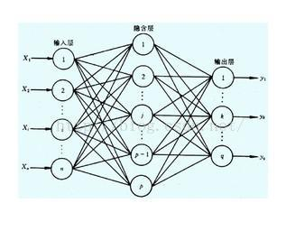
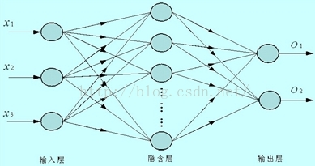
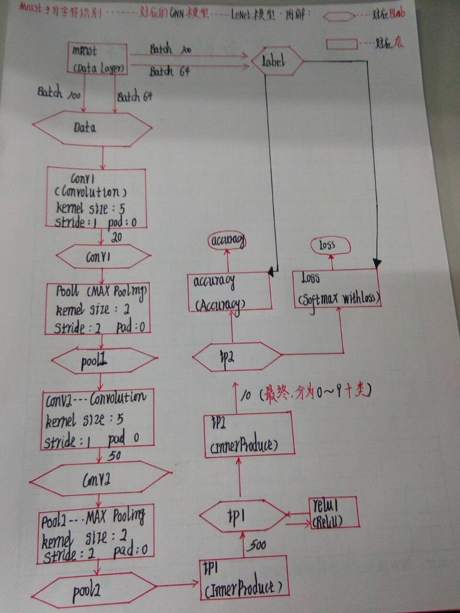
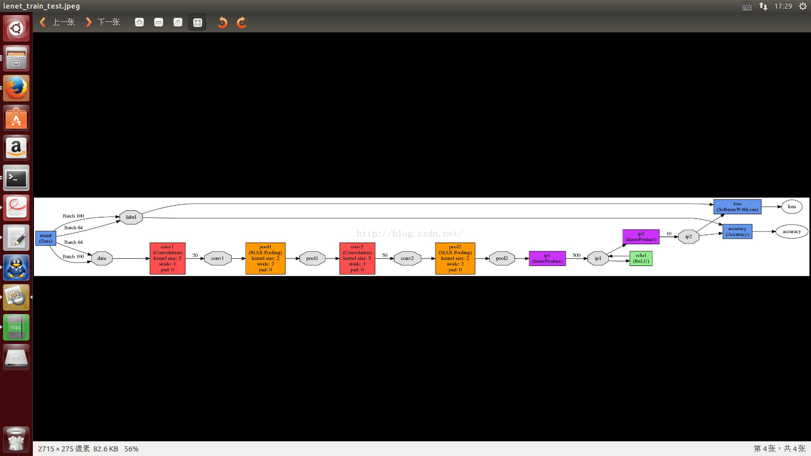

1 2 3 | (一)CNN神经网络模型的概述: 在我没有学习卷积神经网络(深度学习)之前,我看了很多的神经网络,什么人工神经网络,BP神经网络等等,在学习神经网络的时候,经常会见到下面的网络模型或者说图片吧: |

1 2 3 4 5 6 7 8 9 10 | 那么问题来了,如果我们要用程序来实现这些神经网络的话,使用什么样的形式去实现它呢? 1---结构体+结构体指针 2---类 总之,是一个比较困难的事情.现在caffe为我们提供了一种很方便的方法:使用网络配置文件去实现它,如果拿Mnist手写数字识别所使用的CNN神经网络模型LeNet来说的话,它的神经网络模型的描述文件就是/home/wei/caffe/examples/mnist/文件夹下面的:lenet_train_test.prototxt(二)LeNet模型的详解 在我们具体看这个网络模型描述文件之前,我们首先使用caffe的可视化程序,将这个网络模型画出来.我们使用/home/wei/caffe/python/文件夹下的draw_net.py这个python脚本程序. 具体的命令如下所示: |
1 | sudo python ./python/draw_net.py ./examples/mnist/lenet_train_test.prototxt ./examples/mnist/lenet_train_test.jpeg |


结合上面我画的LeNat-CNN模型的网络结构图,然后去看网络描述(配置文件),试着理解LeNet模型(最简单的卷积神经网络模型):
那么,现在,我们来具体看一下lenet_train_test.prototxt这个文件的具体内容:
1 2 3 4 5 6 7 8 9 10 11 12 13 14 15 16 17 18 19 20 21 22 23 24 25 26 27 28 29 30 31 32 33 34 35 36 37 38 39 40 41 42 43 44 45 46 47 48 49 50 51 52 53 54 55 56 57 58 59 60 61 62 63 64 65 66 67 68 69 70 71 72 73 74 75 76 77 78 79 80 81 82 83 84 85 86 87 88 89 90 91 92 93 94 95 96 97 98 99 100 101 102 103 104 105 106 107 108 109 110 111 112 113 114 115 116 117 118 119 120 121 122 123 124 125 126 127 128 129 130 131 132 133 134 135 136 137 138 139 140 141 142 143 144 145 146 147 148 149 150 151 152 153 154 155 156 157 158 159 160 161 162 163 164 165 166 167 168 169 170 171 172 173 174 175 176 177 178 179 180 181 182 183 184 185 186 187 188 189 190 191 192 193 194 195 196 197 198 199 200 201 202 203 204 205 206 207 208 209 210 211 212 213 214 215 216 217 218 219 220 221 222 223 224 225 226 227 228 229 230 231 232 233 234 235 236 237 238 239 240 241 242 | //***********************************************************************************************name: "LeNet" //[1]网络(Net)的名称为:LeNet/************************************************************************************************模块1:* 1--数据层----Data Layer* 2--该数据层只在[训练]阶段有效***********************************************************************************************/layer { /****[1]定义一个数据层****/ name: "mnist" //[1]数据层的名字为--mnist type: "Data" //[2]层的层类型:Data(数据层)(数据库作为输入) top: "data" //[3]数据层的输出blob有两个:data,label(对应生成的CNN图看) top: "label" include { //[4]include里面的数据说明,该层只在训练阶段有效 phase: TRAIN } transform_param { //[5]数据预处理,转换参数的定义 scale: 0.00390625 //[5]特征归一化系数,将范围为[0,255]的MNIST数据归一化为[0,1] } data_param { //[6]数据层的参数 source: "examples/mnist/mnist_train_lmdb"//[1]由于该数据层的数据来源是数据库(由层类型Data指定), // 因此,source对应的就是数据库LMDB的路径,也就是训练 // 数据和测试数据的path batch_size: 64 //[2]批量数目,表示caffe一次从数据库LMDB读入的图片的数量 backend: LMDB //[3]数据库的类型说明区别于LevelDB数据库 }}/************************************************************************************************模块2:* 1--数据层----Data Layer* 2--一个新的数据层,名字也叫做mnist,输出的blob也是data和label,但是这个数据层只在分类阶段有效,Test* 3--图片大小28*28***********************************************************************************************/layer { name: "mnist" type: "Data" top: "data" top: "label" include { phase: TEST } transform_param { scale: 0.00390625 } data_param { source: "examples/mnist/mnist_test_lmdb" batch_size: 100 backend: LMDB }}/************************************************************************************************模块3:* 1--第一个卷积层---Convolution* 2--定义一个新的卷积层,卷积层的输入blob为data;输出blob为conv1* 3--Convolution层,使用一系列可训练的卷积核(相当于空间滤波的滤波算子)对输入图像进行卷积操作,每组* 卷积核生成输出图像中的一个特征图(相当于对输入图像,使用20个不同的滤波算子(卷积)进行20次卷积* 之后生成的20张经过滤波的特征图)* 4--输出图片大小:(28+2*0-5)/1+1=(img_h+2*pad_h-kernel_h)/stride_h+1======24*24***********************************************************************************************/layer { name: "conv1" type: "Convolution" bottom: "data" //[1]卷积层的输入blob为data top: "conv1" //[2]卷积层的输出blob为conv1 param { //[3]卷积层的:权值学习速率倍乘因子,1表示,保持与全局参数一致 lr_mult: 1 } param { //[4]卷积层的:偏置项的学习速率倍乘因子,是全局参数的2倍 lr_mult: 2 } convolution_param { //[5]卷积层的计算参数 num_output: 20 //[1]输出feature map的数目为20,对应的也就是卷积核的数量 kernel_size: 5 //[2]卷积核的尺寸为:5*5 stride: 1 //[3]卷积核在输入图片上滑动的步长为:1 weight_filler { //[6]指定权值的初始化方案为:xavier type: "xavier" } bias_filler { //[7]偏执项的初始化方案为:constant,默认为0 type: "constant" } }}/************************************************************************************************模块4:* 1--第一个池化层---pool1* 2--定义一个下采样层(池化层),这个池化层的输入blob为conv1,输出blob为pool1* 3--输出图片的大小===12*12***********************************************************************************************/layer { name: "pool1" type: "Pooling" bottom: "conv1" top: "pool1" pooling_param { //[1]池化层(下采样)的参数 pool: MAX //[1]目前提供了三种池化的方法:最大值池化,均值池化,随机池化 // 很明显,该池化层使用了最大值池化MAX kernel_size: 2 //[2]指定池化窗口的宽度和高度:2*2 stride: 2 //[3]指定池化窗口在输入数据上滑动的步长为:2 }}/************************************************************************************************模块5:* 1--第二个卷积层:conv2* 2--该卷积层的输入blob为pool1,输出blob为conv2* 3--注意:该卷积层输出的feature map(特征图的数量)为:50* 4--输出图片的大小为:(12-2*0-5)/1+1=======8*8***********************************************************************************************/layer { name: "conv2" type: "Convolution" bottom: "pool1" top: "conv2" param { lr_mult: 1 } param { lr_mult: 2 } convolution_param { num_output: 50 kernel_size: 5 stride: 1 weight_filler { type: "xavier" } bias_filler { type: "constant" } }}/************************************************************************************************模块6:* 1--第二个池化层:pool2* 2--该池化层的输入blob为conv2,输出blob为pool2***********************************************************************************************/layer { name: "pool2" type: "Pooling" bottom: "conv2" top: "pool2" pooling_param { pool: MAX kernel_size: 2 stride: 2 }}/************************************************************************************************模块7:* 1--第一个全连接层* 2--该层的输入blob为:pool2,输出blob为iP1* 3--注意:全连接层的的输出节点数(num_output==500)可以理解为滤波器的个数(滤波算子的个数),对应的也* 就是输出特征图的个数***********************************************************************************************/layer { name: "ip1" type: "InnerProduct" bottom: "pool2" top: "ip1" param { lr_mult: 1 } param { lr_mult: 2 } inner_product_param { //[1]全连接层的参数: num_output: 500 //[1]该层的输出元素的个数为:500 weight_filler { //[2]指定全连接层的初始化方案:xavier type: "xavier" } bias_filler { type: "constant" } }}/************************************************************************************************模块8:* 1--新的非线性层(激活函数)(规整化线性单元),此激活层采用的激活函数为:RELU* 2--该激活层的输入blob为iP1,输出blob也为iP1* 3--该(规整化线性单元)激活层的作用为:对全连接层的每一个输出数据进行判断,当x>0时,RELU的输出为x,* 根据X的大小,说明这个单元的激活程度(兴奋程度);如果x<=0,则这个信号(特征图)被完全抑制***********************************************************************************************/layer { name: "relu1" type: "ReLU" bottom: "ip1" top: "ip1"}/************************************************************************************************模块9:* 1--第二个全连接层InnerProduct* 2--该层的输入blob为iP1,输出blob为ip2***********************************************************************************************/layer { name: "ip2" type: "InnerProduct" bottom: "ip1" top: "ip2" param { lr_mult: 1 } param { lr_mult: 2 } inner_product_param { //[1]全连接层的计算参数 num_output: 10 //[1]该层的输出为10个特征,对应0--9这10类数字 weight_filler { //[2]该层在网络初始化的初始化方案为:xavier type: "xavier" } bias_filler { //[3]给该层添加偏置项,偏置项网络的初始化方案为:constant type: "constant" } }}/************************************************************************************************模块10:* 1--Accuracy---分类准确率层* 2--Accuracy层的作用:该层用来计算网络输出相对于目标值的准确率* 3--该层的输入blob为iP2和label,输出blob为accuracy* 4--注意:记住该层只在Test(测试)阶段有效,并且,它并不是一个Loss层,所以这次没有BP操作***********************************************************************************************/layer { name: "accuracy" type: "Accuracy" bottom: "ip2" bottom: "label" top: "accuracy" include { phase: TEST }}/************************************************************************************************模块11:* 1--Loss层,损失层* 2--层类型:SoftnaxWithLoss---softmax损失层一般用于计算[多分类问题]的损失,在概念上等同于softmax* 层后面跟一个多变量的logistic回归损失层,但能提供更稳定的梯度***********************************************************************************************/layer { name: "loss" type: "SoftmaxWithLoss" bottom: "ip2" bottom: "label" top: "loss"} |